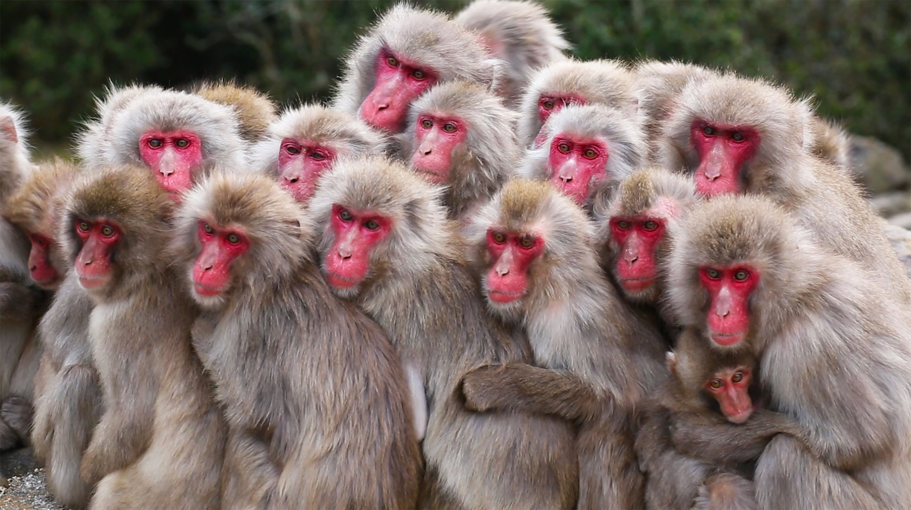
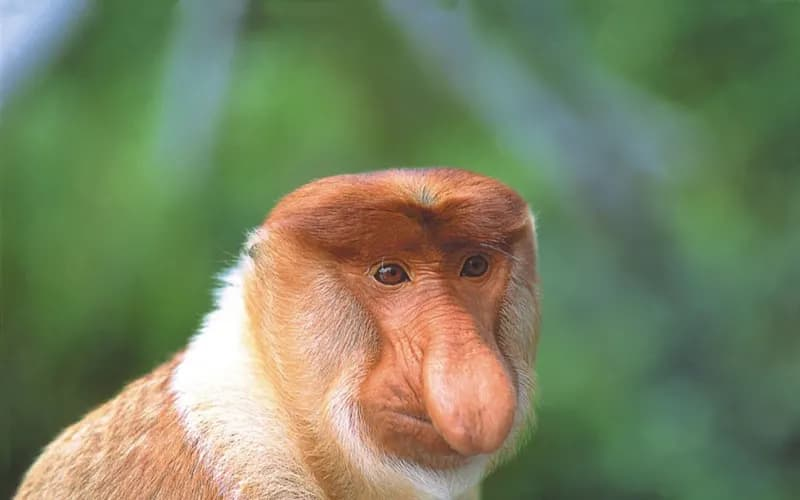
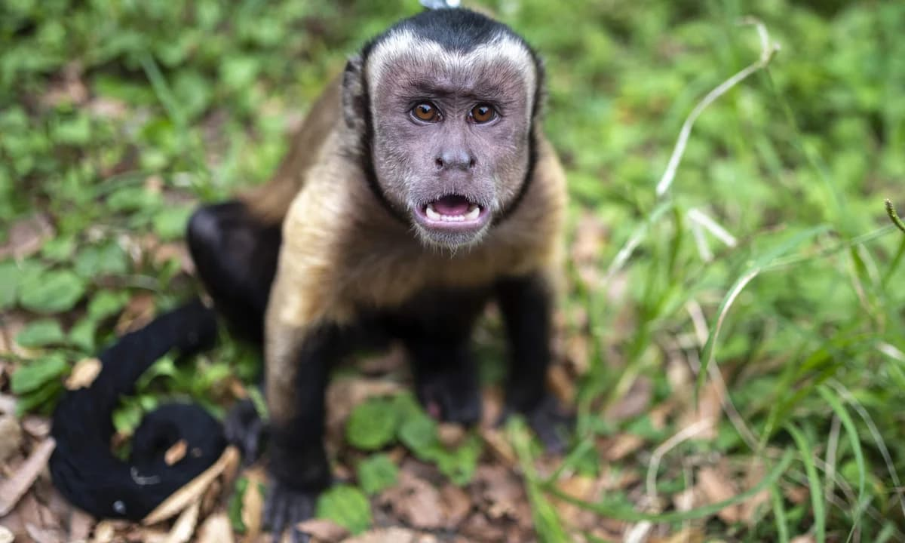

Бібізяни — це справжні королі джунглів! Вони володіють неймовірною спритністю та хитрістю, що дозволяє їм миттєво підкорювати будь-які дерева та захоплювати найсоковитіші фрукти.
Їхня компанія — найгучніша на будь-якому галасливому вечірці, а витівки завжди викликають сміх та захоплення. Круті бібізяни вміють дружити та підтримувати один одного, вони знають, як перетворити нудний день на захопливу пригоду.
Хто не любить бібізян? Ці пустуни завжди готові до нових пригод та не бояться жодних викликів!
Рейд гільдії "Поляна Квасова" 2024 рік, фотокарточка у кольорі
Голова гільдії "Поляна Квасова" — жінка-обезьяна, яка вирізняється особливим шармом, силою духу і неабиякою кмітливістю. Її зовнішній вигляд, поведінка та стиль керівництва надають гільдії унікальності та привабливості.
Її місія — захистити членів гільдії і вести їх до процвітання, зберігаючи вірність традиціям "Поляни Квасова". Вона надає велике значення єдності, злагодженості та підтримці, завжди мотивуючи свою команду на нові звершення. Її ціль — створити таке середовище, де кожен відчуває себе важливою частиною гільдії.
Заступник голови гільдії "Поляна Квасова" — чоловік-обезьяна, що є правою рукою лідерки. Він надійний і розумний, відомий своєю силою, хитрістю та відданістю, а також глибоким знанням природи. Його призначення полягає у підтримці порядку в гільдії, допомозі членам і захисті інтересів гільдії, особливо в моменти, коли голова відсутня.
Заступник прагне підтримувати авторитет голови і слідкувати за дисципліною в гільдії. Його місія — зміцнювати бойовий дух та згуртованість членів. Він часто є наставником для молодших учасників, вчить їх основам виживання, природної мудрості та захисту гільдії. Його головна мета — забезпечити безпеку та добробут кожного члена.
